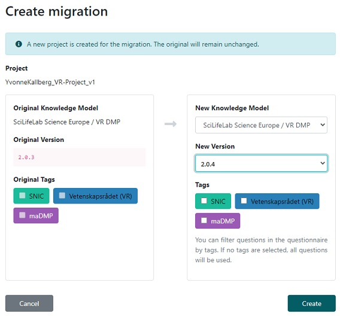
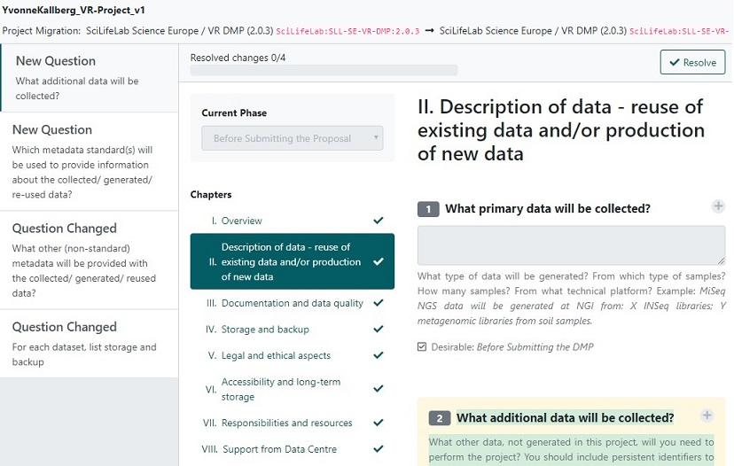
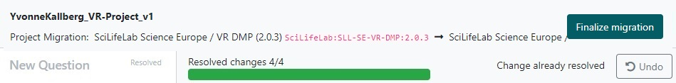

Instructions on how to update an outdated Questionnaire
When new versions of a Knowledge Model is released, questionnaires based on earlier versions becomes marked as outdated. You don't have to do anything, but hopefully the newer Knowledge Model has an improved value, with new questions or better guidance. In order to make the questionnaire up-to-date, you can use the Create migration function.

First step
In the first dialogue window, select the highest version number as New Version and click on Create. Note: The old, outdated version will remain unchanged until you specifically delete it, these steps will create an updated copy.
Second step
A window with the defferences between the versions appear. The left panel displays an overview with the differences for each question, whether it is a new or a changed one. In the right panel the detailed difference is displayed. Highlighted in yellow is the current change you need to approve of by clicking on Resolve in the right top corner.
Third step
When all changes has been resolved, an option to Finalize Migration will become visible in the right top corner, click on it and then you can edit or close the updated questionnaire, as you prefer.
